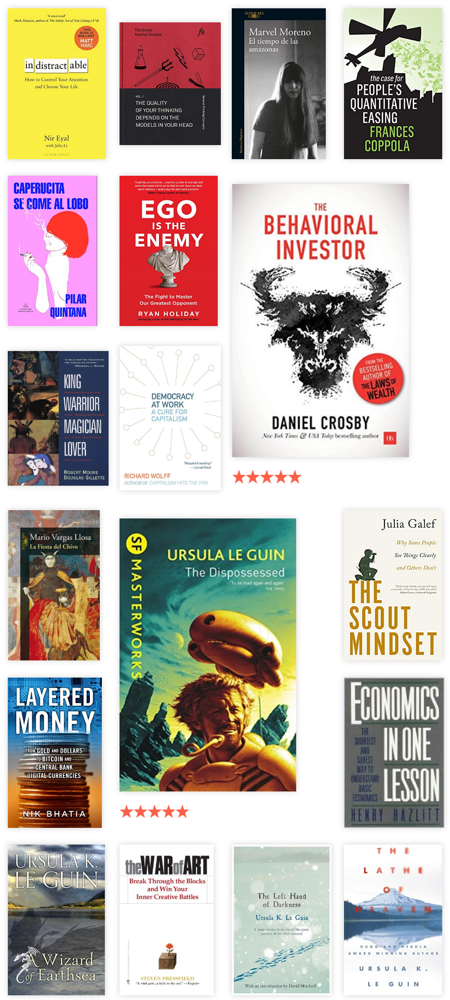

Este año volví a leer bastante (bastante para lo que usualmente leo), estas son algunas de las cosas que leí:
Ficción
Ursula K. Le Guin

El descubrimiento más chévere de este año fue Ursula K. Le Guin, una escritora de fantasía y ciencia ficción. Mi libro favorito de ficción de este año fue “The Dispossessed”, escrito por ella. Es de ciencia ficción y trata de un científico que hace parte de una sociedad anárquica casi que utópica. El científico hace un descubrimiento y decide compartirlo fuera de su mundo, y ahí es donde empiezan los conflictos. Creo que el libro es una excusa para hablar sobre qué significa la libertad, qué significa conformarse a una sociedad y otras cosas. También hace guiños a sobre qué significa la prosperidad en una sociedad. Podría escribir mucho sobre este libro, sobre lo mucho que me gusta en su mayoría pero prefiero que la gente lo descubra por su cuenta. Algunos pasajes que me gustaron:
He had assumed that if you removed a human being’s natural incentive to work—his initiative, his spontaneous creative energy—and replaced it with external motivation and coercion, he would become a lazy and careless worker. But no careless workers kept those lovely farmlands, or made the superb cars and comfortable trains. The lure and compulsion of profit was evidently a much more effective replacement of the natural initiative than he had been led to believe.
Have we not eaten while another starved? Will you punish us for that? Will you reward us for the virtue of starving while others ate? No man earns punishment, no man earns reward. Free your mind of the idea of deserving, the idea of earning, and you will begin to be able to think.
El segundo libro que me leí de ella es “A Wizard of Earthsea”, el primero de una saga de fantasía sobre un mago. Es el tipo de libro que me hubiera gustado leer de pequeño. Está bastante bien escrito. Le Guin construye un mundo con una consistencia interna y con una variedad geográfica. También tiene muchas referencias “Jungianas”: el antagonista es precisamente una “sombra”, entre otras cosas. Probablemente lea más libros de esta saga.
También leí “The Left Hand of Darkness”, otro de ciencia ficción que imagina un mundo en el que las personas no tienen un sexo definido. Es uno de esos experimentos mentales donde se habla de los roles sexuales y como eso resultaría en otra sociedad. Este no es tan bueno como los otros, siento que hubo varias cosas que podría haber explorado con más profundidad.
El último de Le Guin que leí es “The Lathe of Heaven”, que es es de ciencia ficción. Resumiendo la premisa principal, trata de George Orr, un hombre cuyos sueños afectan la realidad. Esto se convierte en una carga para él, ya que su realidad está cambiando constantemente. Buscando a alguien que lo cure, encuentra un terapeuta, que dándose cuenta de sus poderes intenta afectar los sueños de Orr para mejorar la sociedad.
Otros de ficción
Los otros de ficción que leí fueron de autoras colombianas. “El tiempo de las amazonas”, novela póstuma de Marvel Moreno, es sobre un grupo de colombianas en Paris conviviendo con sus parejas y explorando sus deseos. El estilo narrativo es un poco complicado, un poco similar a escuchar chismes. Es un obra a medias (publicada postumamente) pero creo que vale la pena leerla. Se me hizo como la versión femenina de “El síndrome de Ulises” en el sentido que también habla sobre colombianos en Paris y sobre sus vidas románticas.
No ficción
El mejor libro de no ficción que leí este año fue “The Scout Mindset” de Julia Galef. Si tuviera que resumirlo en una frase es sobre la idea de que “uno debe mirar las cosas por lo que son, y no por lo que uno desearía que fuera”. En general trata sobre lógica, sobre buscar “la verdad” sin importar a donde nos lleve, sobre tomar decisiones sin sesgos, sobre como nuestra identidad se relaciona con nuestras creencias, entre otras cosas. Algunos apartes:
If instead you see the world in shades of gray, and you think of “changing your mind” as an incremental shift, then the experience of encountering evidence against one of your beliefs is very different.
The ideological Turing test, suggested by economist Bryan Caplan, is based on similar logic. It’s a way to determine if you really understand an ideology: Can you explain it as a believer would, convincingly enough that other people couldn’t tell the difference between you and a genuine believer? If you think Haskell is the best programming language, can you explain why someone might hate it?
Many identity-affirming actions, in turn, have little real-world impact. Think of someone putting bumper stickers on their car or yelling at strangers online for holding the wrong views. Some identity-affirming actions even have negative impact— they’re counterproductive for your goals.
(…) it’s a sign of confidence, intellectually, to not need to be certain about everything
Recomiendo el canal de YouTube de la autora.
Otro de no ficción que me gustó fue “The behavioral investor”, sobre sicología e inversiones. Se me hace que mucho de lo que habla es aplicable no solo a inversiones sino a toma de decisiones. En cualquier caso, lo recomiendo para personas que están aprendiendo a invertir y quieren mejorar la forma en que toman decisiones. Algunos apartes:
Rapid, decisive action may save a squirrel from an owl, but it certainly doesn’t help investors. In fact, a large body of research suggests that investors profit most when they do the least.
Having more money seems to provide those undergoing adversity with greater security and resources for dealing with their troubles. However, the researchers found that this effect (mitigating the impact of difficulty) disappears altogether at an annual income of $75,000.
“Even once we are aware of our biases, we must recognize that knowledge does not equal behavior. The solution lies in designing and adopting an investment process that is at least partially robust to behavioral decision-making errors.”
Otros libros que creo que merecen una breve mención:
- “Layered Money” de Nik Bhatia: es sobre una forma de ver los distintos tipos de “dinero”, concluyendo con Bitcoin. A pesar de que no creo en Bitcoin como la panacea un libro como este es útil para entender esas personas que ponen su fé en Bitcoin.
- “Economics in One Lesson” de Henry Hazlitt: Es una introducción básica a economía, con un tono un poco libertario. Se me hace que está un poco desactualizado y algunas cosas hay que sopesarlas. Una vez más, sin ser un defensor del libre comercio, este libro sirve para entenderlos.
- “Democracy at Work: A Cure for Capitalism”: Es en parte un recuento de los efectos negativos del capitalismo y al mismo tiempo una explicación sobre “Worker Self-Directed Enterprises” (WSDE). Estas son compañías dirigidas democráticamente por sus trabajadores y donde estos eligen qué hacer con las ganancias.